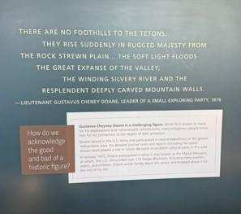
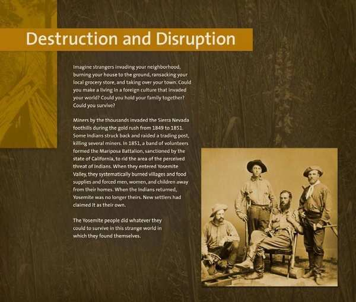
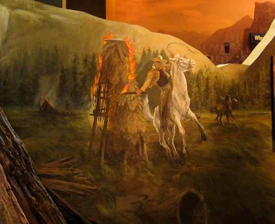

109 interpretive exhibits about Indigenous and Native American history have been flagged or removed across 59 parks — the largest single category targeted under Secretary's Order 3431.
With 109 flagged entries across 59 parks, Indigenous and Native American history is the single largest category of content targeted under Secretary's Order 3431. The materials being censored include exhibits about forced removals, broken treaties, the boarding school system, and the displacement of Native peoples from lands that later became national parks.
At Grand Canyon National Park, interpretive panels explaining how Native Americans were displaced from the area have been ordered removed. At Little Bighorn Battlefield National Monument, language describing the United States being "hungry for gold and land" and breaking promises to Native Americans was flagged for revision. At Sitka National Historical Park in Alaska, a display referencing the mistreatment of Native peoples by missionaries was targeted.
The U.S. Fish and Wildlife Service has also been involved: a national film used across the refuge system was flagged because it included the statement that "from the earliest days of colonization the delicate balance nurtured by indigenous peoples, the first stewards of these lands, was violently disrupted."
America's national parks are on Native land. Nearly every major national park in the United States was carved from territory that belonged to Indigenous peoples. Removing the history of how that land was taken doesn't honor anyone — it erases the people who were here first.
Legal Challenge: A coalition led by the NPCA filed NPCA v. Department of the Interior (1:26-cv-10877, D. Mass.) challenging NPS sign removals system-wide, including Indigenous history exhibits at Grand Teton, Grand Canyon, and other parks. The coalition filed for a preliminary injunction on March 19, 2026, seeking to halt further removals pending resolution. The case remains ongoing. Full legal timeline →
Interactive map filtered to Indigenous and Native American history entries. Click any pin for details.

This exhibit panel at the Craig Thomas Discovery Center asked visitors: "How do we acknowledge the good and bad of a historic figure?" It described Gustavus Cheney Doane, an explorer known for leading a massacre of Piegan Blackfeet people. The sign was confirmed removed. The park sits on land sacred to the Eastern Shoshone, Crow, Blackfeet, and other tribes for over 11,000 years. View on map →
Photo from Missing Park History Censorship Tracker
Gustavus Cheney Doane was a U.S. Army officer who participated in the Marias Massacre of January 23, 1870, in which a 675-man Army force attacked a peaceful Piegan Blackfeet village, killing approximately 170–200 people — predominantly women, children, and elders suffering from smallpox. The soldiers attacked the wrong band: when scout Joe Kipp warned Major Baker they had the wrong group, Baker reportedly said, "That makes no difference, one band or another of them; they are all Piegans and we will attack them." No soldiers faced disciplinary action. Doane bragged about the massacre for the rest of his life.
In June 2022, the U.S. Board on Geographic Names voted 15–0 to rename Mount Doane to First Peoples Mountain in neighboring Yellowstone, following consultation with 27 associated tribes. The Grand Teton exhibit panel that asked visitors to reckon with Doane's legacy was removed under the same directive that prompted the renaming effort — effectively reversing the park's own attempt at honest historical interpretation.
Staff at a Grand Canyon visitor center removed portions of an exhibit after flagging potentially problematic passages to NPS leadership. The removed text stated that settlers "exploited land for mining and grazing" and that federal officials "pushed tribes off their land" to establish the park. References to cattle ranchers "carelessly overgrazing" the land and entrepreneurs who "profited excessively" from tourism were also removed. View on map →
The Grand Canyon has been home to Indigenous peoples for at least 12,000 years. Eleven tribes have cultural ties to the canyon, including the Havasupai, Hualapai, Navajo, Hopi, and Paiute nations. The Havasupai — whose name means "people of the blue-green waters" — were forcibly confined to a tiny reservation at the bottom of Havasu Canyon in 1882 after being expelled from their ancestral winter grounds on the plateau above. They did not regain part of those lands until 1975, and the park itself was carved from territory the Havasupai had used for centuries.
Additional items flagged but not yet confirmed removed include a video about Native American history and roadside displays on climate change, pollution, and mining. The park receives over 6 million visitors per year, making these exhibits among the most widely viewed in the entire National Park System. Sources: Washington Post, NPCA.


These Yosemite exhibit panels tell the story of the Mariposa Battalion, which in 1851 burned villages and forced Ahwahneechee men, women, and children from their homes in what is now Yosemite Valley. Nine exhibit photos have been documented; two entries are flagged for revision. View on map →
Photos from Missing Park History Censorship Tracker
The Ahwahneechee people — a band of Mono and Miwok peoples — inhabited Yosemite Valley for approximately 7,000 years, practicing intentional burning to manage the landscape and depending on black oak acorns for roughly 60% of their diet. In February 1851, the Mariposa Battalion, a 197-man militia, became the first non-indigenous group to enter the valley — not as explorers but as a military force. They systematically burned villages and food stores, and on May 22, 1851, surrounded the Ahwahneechee at Lake Tenaija, forcing their surrender and removal.
The word "Yosemite" itself comes from the Miwok word yohhe'meti, meaning "they are killers" — the name neighboring tribes used for the Ahwahneechee, whom they feared. The U.S. government forcibly removed Native Americans from the valley in 1851, 1906, 1929, and again in 1969. The exhibit panels now flagged for revision are among the few materials that tell this story to the 3.5 million people who visit Yosemite each year.
This site was designated specifically to memorialize the 1864 massacre of over 200 Cheyenne and Arapaho people, mostly women, children, and the elderly. Four interpretive entries have been flagged under SO 3431. The site exists because of what happened here — censoring its exhibits undermines the reason Congress created it. View on map →
On November 29, 1864, Colonel John Chivington led 675 soldiers of the Third Colorado Cavalry in an attack on a Cheyenne and Arapaho village that was flying both an American flag and a white flag of truce, signaling its protected status under an agreement with Fort Lyon. Approximately 150 people were killed — about two-thirds of them women and children. Soldiers mutilated bodies and burned the village. Congress's Joint Committee on the Conduct of the War later called it "a foul and dastardly massacre which would have disgraced the veriest savage."
The site was authorized as a National Historic Site by Public Law 106-465 on November 7, 2000, and formally established in 2005. It is the first unit of the National Park System to label American troops as perpetrators rather than heroes. Its entire reason for existing is to tell this story — a story that four flagged entries now threaten to silence.
Five interpretive entries at Acadia have been flagged for review. These entries cover both climate science and Indigenous history, making Acadia a key example of how the censorship order affects overlapping topics. The removed climate panels — including "Is There Refuge From A Changing Climate?" — also discussed the Wabanaki people, who have called this region home for at least 12,000 years. View on map →
The Wabanaki Confederacy — comprising the Mi'kmaq, Maliseet, Passamaquoddy, Abenaki, and Penobscot nations — were the original stewards of Pemetic ("the sloping land"), the area now known as Mount Desert Island. European colonization displaced the Wabanaki from their ancestral lands beginning in the 1600s. Today the park collaborates with the Wabanaki on cultural interpretation and climate monitoring, recognizing their deep ecological knowledge. The flagged entries represent an intersection of climate science and Indigenous knowledge that SO 3431 has targeted from both angles. See also: Climate Censorship →
Five interpretive signs at the Annaberg Plantation ruins were confirmed removed on February 4, 2026. While the exhibits primarily documented the history of enslaved labor at the Danish colonial sugar plantation, they also contained significant Taíno archaeological context — the Indigenous Caribbean people who inhabited St. John for over 1,000 years before European contact. View on map →
The Taíno arrived in the U.S. Virgin Islands around 300 CE and established complex agricultural and fishing communities across St. John. Archaeological sites at Cinnamon Bay and Trunk Bay contain ceramic fragments, shell tools, and zemí artifacts. Columbus's arrival in 1493 initiated a catastrophic decline: within decades, the Taíno population was devastated by enslavement, disease, and violence. The Danish colonizers who later built Annaberg Plantation in the 1720s constructed it on land the Taíno had cultivated for centuries. The removed signs at Annaberg contextualized this layered history, connecting Indigenous displacement to the establishment of chattel slavery. See also: Slavery & Plantation History →
Grand Teton — The Marias Massacre: Gustavus Cheney Doane led a cavalry unit in the Marias Massacre of January 23, 1870, which killed approximately 170–200 Piegan Blackfeet people, predominantly women, children, and elders. The removed exhibit asked visitors to reckon with how we honor figures with violent histories. In 2022, Yellowstone renamed Mount Doane to First Peoples Mountain for similar reasons.
Yosemite — The Mariposa Battalion: The word "Yosemite" comes from the Southern Miwok yos-e-meti, meaning "those who kill." In 1851, the Mariposa Battalion entered Yosemite Valley, systematically burned Ahwahneechee villages and food supplies, and forced men, women, and children from their homes. The U.S. government evicted Yosemite's Native people in multiple waves: 1851, 1906, 1929, and again in 1969. The flagged exhibit panels tell this story.
Sand Creek: On November 29, 1864, Colonel John Chivington led 675 soldiers in an attack on a peaceful Cheyenne and Arapaho encampment, killing more than 200 people, mostly women, children, and elders. Chief Black Kettle had brought his band to Fort Lyon in compliance with peace negotiations. Congress condemned the massacre and, in 2000, authorized the National Historic Site specifically to "recognize the national significance of the massacre" to the Cheyenne and Arapaho people. Censoring exhibits here contradicts the congressional mandate that created the site.
All national parks exist on traditional Indigenous lands. The NPS has established over 250 co-stewardship agreements with Tribal Nations to collaboratively manage resources and protect cultural sites. SO 3431 threatens not just historical exhibits but the ongoing relationship between tribes and the federal agencies legally obligated to consult with them.
Photos courtesy Save Our Signs (public domain). Help document signs at your local park by submitting photos at saveoursigns.org.
See all 444 entries across every national park and wildlife refuge.
🗺 Open Interactive Map